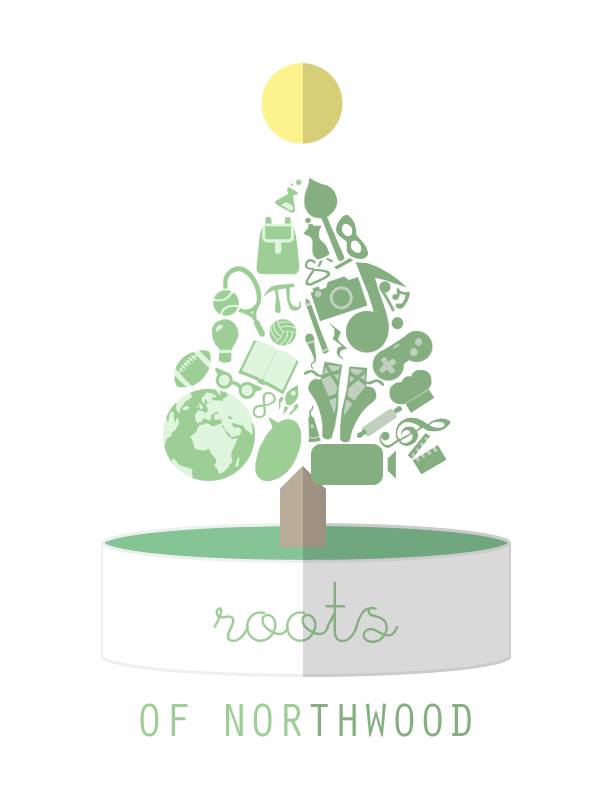
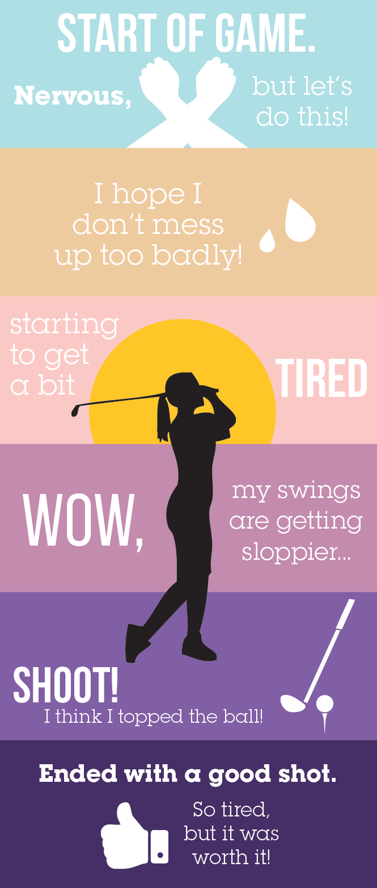
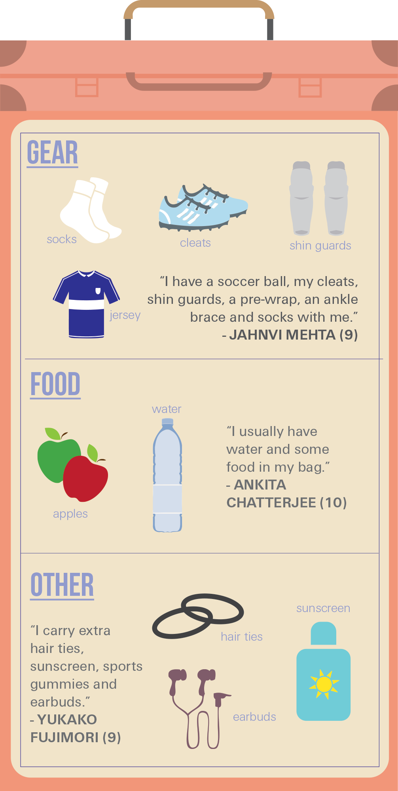

Second Impressions at Berkeley
GRAPHIC DESIGN
Second Impressions at Berkeley
My second client with Innovative Design was Second Impressions at Berkeley. The officers at Second Impressions at Berkeley requested a logo and cover photo design for both Second Impressions at Berkeley and Second Impressions at UCLA. During my first meeting with a representative from Second Impressions at Berkeley, I learned that the organization was similar to Humans of New York but for international people on campus and off campus. The organization's mission is to portray internationalism and impressions.
Because the organization's mission is to portray internationalism and impressions, I wanted to include these aspects in my logo and cover photo designs. I decided to incorporate a book to represent storytelling and a globe to represent internationalism. The plane, which points towards Berkeley, represents the journey from a different country to the United States.

The officers at Second Impressions at Berkeley liked my design for the cover photo, so I digitalized my design on Adobe Illustrator. I incorporated the school colors in order to make the Berkeley and the UCLA cover photos distinctive.

Second Impressions at Berkeley ended up selecting the bottom row of cover photos (Berkeley with yellow background and UCLA with light blue background). Second Impressions at Berkeley is currently using my design as their cover photo on their Facebook page.

IEEE at Berkeley
GRAPHIC DESIGN
IEEE at Berkeley
My first client with Innovative Design was Institute of Electrical and Electronics Engineers (IEEE) at Berkeley. The officers at IEEE at Berkeley requested a logo remake that correlated with the official IEEE logo while incorporating elements that represented Berkeley.
For my first draft, I created a graphic of the Campanile, the symbolic clocktower at the center of the UC Berkeley campus. The Campanile, shaped similarly to an arrow, replaced the up arrow in the middle of the official IEEE logo. I replicated the kite shape and the circular arrow in order to stay consistent with the original IEEE logo.

Official IEEE Logo

My IEEE Logo Design
I worked together with Victor Zhang, another graphic designer on my team. The circular arrow that he designed was more clean and visually looked better and was preferred by the officers at IEEE at Berkeley. We collaborated to combine his arrow with my Campanile.
Victor and I worked together to determine the best placement of text for the final design. IEEE at Berkeley ended up selecting the following arrangement as the final design:


Personal Visual Illustrations
GRAPHIC DESIGN
Personal Projects
Just things I enjoyed designing!
A 2D representation of Tiny's and the Bar Upstairs located in New York.
A design I created for the prompt "Roots". It represents the "Roots of Northwood" (Northwood was the high school I attended), and it shows the two sides of a Northwood student: the academic side and the creative side.

Graphic for Back to School Yearbook Page
Graphic for Girls' Golf Yearbook Page
Graphic for Girls' Soccer Yearbook Page